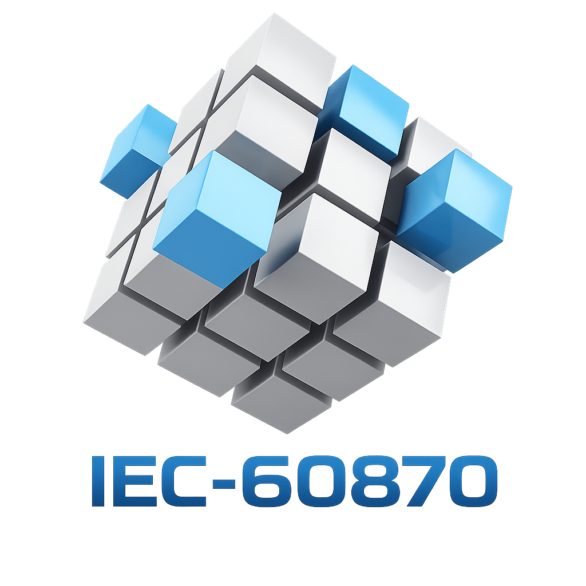

Startup image review
Observe GI, application image readiness, and whether the session is receiving complete data or only background traffic.

IEC101 Master TesterSCADA FAT evidence workspaceIEC 60870-5-101 · SCADA FAT · SAT preparation · NUC redundancy
A Windows desktop master tester for engineers who need to verify serial IEC-101 communication, General Interrogation, Class 1/Class 2 polling, command feedback, SOE replay, and active/standby link behavior without hiding the protocol facts.
What it solves
IEC101 Master Tester keeps operator views and protocol evidence side by side, so engineers can see what the slave returned, what the master requested, and what should be documented.
Observe GI, application image readiness, and whether the session is receiving complete data or only background traffic.
Inspect direction, frame type, ACD, DFC, COT, CASDU, IOA, quality, and decoded detail in the Line Monitor.
Track command transmit, confirmation, timeout, and feedback value changes in one practical workflow.
Test active/standby links, switchover, recovery, post-switch GI behavior, and continuity evidence.
Workflow
Use the tester to connect, interrogate, observe, command, and document IEC-101 behavior in a repeatable workflow.
Screenshots


FAQ
Yes, as an engineering support tool. Use it with an approved test procedure, safe isolation boundary, and project acceptance criteria.
No. Use the Windows portable ZIP from GitHub Releases.
The link layer may be alive while the application image is not ready. Check General Interrogation, Class 1 polling, and returned ASDU data in Line Monitor.
Yes. Build with Visual Studio or MSBuild on Windows. See the Build from Source documentation.
Free and open source
IEC101 Master Tester is released under Apache-2.0 and is designed to be readable, auditable, and practical for engineering teams.